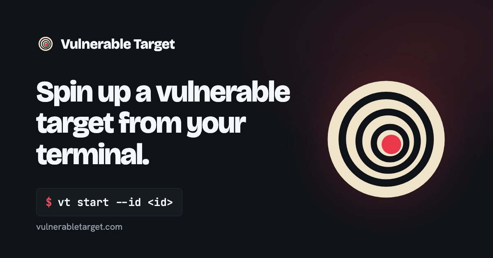

Brand mark
The Vulnerable Target mark and every file made from it. Geometry and colours are in onion-cross.md; build.py copies this folder to /assets/brand/.
Onion cross-section

The Vulnerable Target mark and every file made from it. Geometry and colours are in onion-cross.md; build.py copies this folder to /assets/brand/.
